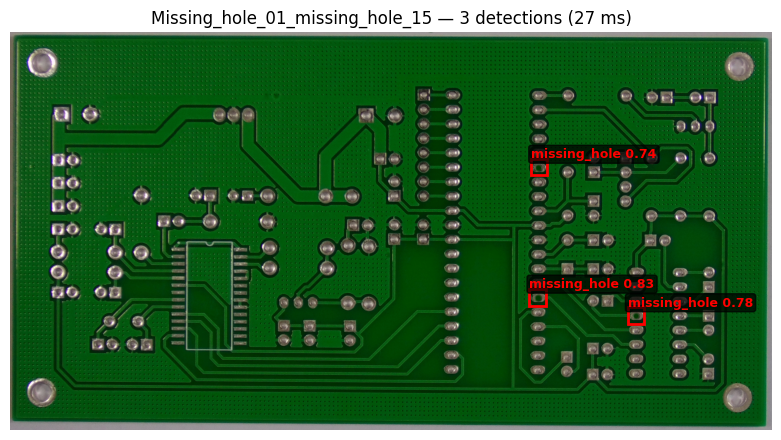
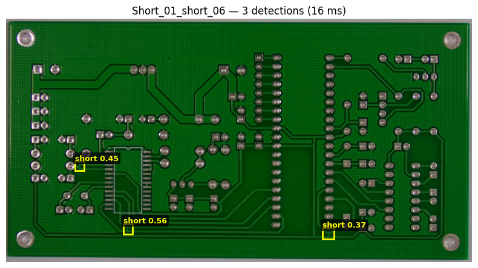

Notebook 08: Flask Inference API Demo#
This notebook documents the Flask-based inference API for PCB defect detection. The API accepts images via HTTP POST and returns JSON predictions with bounding boxes, class labels, and confidence scores.
API Endpoints:
GET /health— Model status and loaded model pathPOST /predict— Image inference with JSON response
%matplotlib inline
import json
from pathlib import Path
import cv2
import matplotlib.pyplot as plt
import matplotlib.patches as patches
import numpy as np
import requests
from PIL import Image
PROJECT_ROOT = Path(".").resolve().parent
YOLO_DIR = PROJECT_ROOT / "data" / "pcb-yolo"
test_img_dir = YOLO_DIR / "images" / "test"
API_URL = "http://localhost:5050"
CLASS_COLORS = {
"missing_hole": "red", "mouse_bite": "lime", "open_circuit": "blue",
"short": "yellow", "spur": "magenta", "spurious_copper": "cyan",
}
1. Starting the Server#
Run the Flask server from the project root:
# Using ONNX model (preferred)
cd app && MODEL_PATH=../models/yolov8_best.onnx python app.py
# Or using PyTorch model
cd app && MODEL_PATH=../models/yolov8_best.pt python app.py
The server runs on http://localhost:5000 by default.
2. Health Check#
try:
resp = requests.get(f"{API_URL}/health", timeout=5)
print(f"Status: {resp.status_code}")
print(json.dumps(resp.json(), indent=2))
except requests.ConnectionError:
print("Server not running. Start with: cd app && python app.py")
Status: 200
{
"model_path": "../models/yolov8_best.pt",
"model_type": "ultralytics",
"status": "healthy"
}
3. Single Image Inference#
def predict_and_visualize(img_path, api_url=API_URL):
"""Send image to API and visualize predictions."""
with open(img_path, "rb") as f:
resp = requests.post(f"{api_url}/predict",
files={"image": (img_path.name, f, "image/jpeg")})
if resp.status_code != 200:
print(f"Error: {resp.status_code} — {resp.text}")
return None
result = resp.json()
# Display image with predictions
img = Image.open(img_path)
fig, ax = plt.subplots(figsize=(8, 8))
ax.imshow(img)
for pred in result["predictions"]:
x1, y1, x2, y2 = pred["bbox"]
color = CLASS_COLORS.get(pred["class"], "white")
rect = patches.Rectangle((x1, y1), x2-x1, y2-y1,
linewidth=2, edgecolor=color, facecolor="none")
ax.add_patch(rect)
ax.text(x1, y1 - 5, f"{pred['class']} {pred['confidence']:.2f}",
color=color, fontsize=9, fontweight="bold",
bbox=dict(boxstyle="round,pad=0.2", facecolor="black", alpha=0.7))
ax.set_title(f"{img_path.stem} — {len(result['predictions'])} detections "
f"({result['inference_time_ms']:.0f} ms)")
ax.axis("off")
plt.tight_layout()
plt.show()
return result
# Test with first available test image
test_imgs = sorted(test_img_dir.glob("*"))
if test_imgs:
try:
result = predict_and_visualize(test_imgs[0])
if result:
print("\nJSON Response:")
print(json.dumps(result, indent=2))
except requests.ConnectionError:
print("Server not running")
else:
print("No test images found")

JSON Response:
{
"image_size": [
3034,
1586
],
"inference_time_ms": 26.91,
"predictions": [
{
"bbox": [
2068.1,
1023.7,
2134.7,
1091.9
],
"class": "missing_hole",
"confidence": 0.8277
},
{
"bbox": [
2460.0,
1097.7,
2523.5,
1162.1
],
"class": "missing_hole",
"confidence": 0.7834
},
{
"bbox": [
2075.0,
506.5,
2137.4,
570.2
],
"class": "missing_hole",
"confidence": 0.7446
}
]
}
4. Batch Inference Demo#
# Batch inference on multiple test images
batch_imgs = sorted(test_img_dir.glob("*.jpg")) + sorted(test_img_dir.glob("*.png"))
batch_imgs = batch_imgs[:6]
if batch_imgs:
fig, axes = plt.subplots(2, 3, figsize=(18, 12))
inference_times = []
for ax, img_path in zip(axes.flat, batch_imgs):
try:
with open(img_path, "rb") as f:
resp = requests.post(f"{API_URL}/predict",
files={"image": (img_path.name, f, "image/jpeg")})
if resp.status_code == 200:
result = resp.json()
inference_times.append(result["inference_time_ms"])
img = Image.open(img_path)
ax.imshow(img)
detected_classes = []
for pred in result["predictions"]:
x1, y1, x2, y2 = pred["bbox"]
color = CLASS_COLORS.get(pred["class"], "white")
rect = patches.Rectangle((x1, y1), x2-x1, y2-y1,
linewidth=2, edgecolor=color, facecolor="none")
ax.add_patch(rect)
detected_classes.append(pred["class"])
# Show detected defect types in title
class_summary = ", ".join(sorted(set(detected_classes))) if detected_classes else "none"
ax.set_title(f"{len(result['predictions'])} det: {class_summary}\n({result['inference_time_ms']:.0f}ms)",
fontsize=10)
else:
ax.text(0.5, 0.5, f"Error: {resp.status_code}", ha="center")
except requests.ConnectionError:
ax.text(0.5, 0.5, "Server not running", ha="center")
ax.axis("off")
plt.suptitle("Batch Inference Results", fontsize=14)
plt.tight_layout()
plt.show()
plt.close("all")
if inference_times:
print(f"Avg inference time: {np.mean(inference_times):.1f} ms")
print(f"Min/Max: {min(inference_times):.1f} / {max(inference_times):.1f} ms")
5. Edge Cases#
Testing the API with deliberately chosen scenarios:
No-defect image: A synthetic clean image to verify the API handles zero detections gracefully
Multi-defect image: An image with many defects to test detection density
Invalid input: Non-image data to verify error handling
# Edge Case 1: Synthetic blank image (no defects expected)
print("--- Edge Case 1: Blank image (no defects expected) ---")
try:
blank = np.full((640, 640, 3), 200, dtype=np.uint8)
_, buf = cv2.imencode(".jpg", blank)
resp = requests.post(f"{API_URL}/predict",
files={"image": ("blank.jpg", buf.tobytes(), "image/jpeg")})
if resp.status_code == 200:
result = resp.json()
print(f" Detections: {len(result['predictions'])} (expected: 0 or very few)")
print(f" Inference: {result['inference_time_ms']:.1f} ms")
if result['predictions']:
print(f" Note: Model produced {len(result['predictions'])} false positives on blank image")
else:
print(f" Error: {resp.status_code}")
except requests.ConnectionError:
print(" Server not running")
# Edge Case 2: Multi-defect image (pick the image with most defects from test set)
print("\n--- Edge Case 2: Multi-defect image ---")
test_imgs_sorted = sorted(test_img_dir.glob("*.jpg")) + sorted(test_img_dir.glob("*.png"))
if test_imgs_sorted:
# Use an image from the middle of the sorted list (likely different from batch demo)
multi_img = test_imgs_sorted[len(test_imgs_sorted) // 2]
try:
result = predict_and_visualize(multi_img)
if result:
print(f" Detections: {len(result['predictions'])}")
for p in result['predictions']:
print(f" {p['class']}: {p['confidence']:.3f}")
except requests.ConnectionError:
print(" Server not running")
# Edge Case 3: Invalid input (non-image data)
print("\n--- Edge Case 3: Invalid input (text file as image) ---")
try:
resp = requests.post(f"{API_URL}/predict",
files={"image": ("test.txt", b"not an image", "text/plain")})
print(f" Status: {resp.status_code} (expected: 400)")
print(f" Response: {resp.json()}")
except requests.ConnectionError:
print(" Server not running")
# Edge Case 4: Missing image field
print("\n--- Edge Case 4: Missing image field ---")
try:
resp = requests.post(f"{API_URL}/predict")
print(f" Status: {resp.status_code} (expected: 400)")
print(f" Response: {resp.json()}")
except requests.ConnectionError:
print(" Server not running")
--- Edge Case 1: Blank image (no defects expected) ---
Detections: 0 (expected: 0 or very few)
Inference: 22.6 ms
--- Edge Case 2: Multi-defect image ---

Detections: 3
short: 0.559
short: 0.451
short: 0.375
--- Edge Case 3: Invalid input (text file as image) ---
Status: 400 (expected: 400)
Response: {'error': 'Could not decode image'}
--- Edge Case 4: Missing image field ---
Status: 400 (expected: 400)
Response: {'error': "No image file provided. Send as 'image' in multipart form data."}
6. API Response Format#
POST /predict#
Request: Multipart form data with image field containing a JPEG/PNG file.
Response (200 OK):
{
"predictions": [
{
"class": "open_circuit",
"confidence": 0.9234,
"bbox": [120.5, 45.2, 280.3, 190.7]
}
],
"image_size": [640, 480],
"inference_time_ms": 45.32
}
Fields:
predictions[].class— Defect class name (one of 6 canonical classes)predictions[].confidence— Detection confidence score (0.0–1.0)predictions[].bbox— Bounding box[x1, y1, x2, y2]in absolute pixel coordinatesimage_size— Input image dimensions[width, height]inference_time_ms— Model inference time in milliseconds
GET /health#
Response (200 OK):
{
"status": "healthy",
"model_type": "ultralytics",
"model_path": "models/yolov8_best.pt"
}